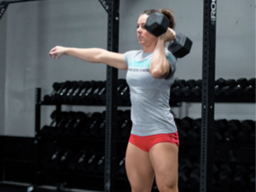

Workout 18.1
Complete as many rounds as possible in 20 minutes of:
8 toes-to-bars
10 dumbbell hang clean and jerks
14 (men) / 12 (woman) -cal. row
Movements standards:
Toes-to-Bar
In the toes-to-bar, the athlete must go from a full hang to having the toes touch the pull-up bar. At the start of each rep, the arms must be fully extended with the feet o the ground, and the feet must be brought back behind the bar and the rest of the body. An overhand, underhand or split-grip are all permitted.
Both feet must come into contact with the bar at the same time, inside the hands. Athletes may wrap tape around the pull-up bar OR wear hand protection (gymnastics-style grips, gloves, etc.), but they may not tape the bar AND wear hand protection.
Dumbbell Hang Clean and Jerk

After the dumbbell is lifted of the floor, the athlete must pause with the dumbbell at the hang position, either at his or her side or between the legs. From there, the athlete may perform a muscle clean, power clean, squat clean or split clean, so long as the dumbbell comes up and makes contact with the shoulder before being lifted overhead.
Once at the shoulder, the athlete may get the dumbbell overhead any way he or she chooses. Shoulder press, push press, push jerk and split jerk are all permitted. The non-working hand may not come into contact with the body or the dumbbell while the dumbbell is being lifted. Athletes may use two hands while lowering the dumbbell between reps.
At the top, the arm, hips and knees must be fully locked out with the dumbbell clearly over the middle of the athleteÕs body when viewed from pro le. Once the athlete has reached lockout, the repetition will count. If a split jerk is performed, both feet must return and be in line under the athleteÕs body while the dumbbell is locked out overhead. Each round, athletes must perform 5 repetitions on one arm, then switch and perform the next 5 with the other arm.
Row
The monitor on the rower must be set to zero at the beginning of each row. The athlete or the judge may reset the monitor. The athlete must stay seated on the rower until the monitor reads 14 / 12 calories.